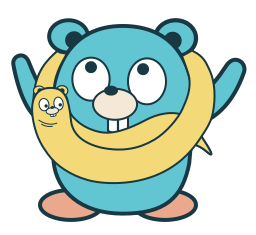

Pythago
Go gopher design by Renée French
·
CC BY 4.0
Synthesized voice · Cori Samuel ·
Hi-Fi TTS, NVIDIA
·
CC BY 4.0
Synthesized voice ·
Piper Ryan
·
RyanSpeech dataset
(
CC BY-NC-SA 4.0
)
▶
00:00
Captions